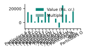
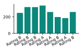
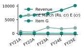
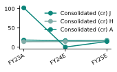
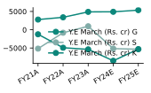
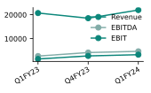
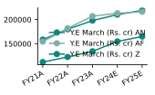
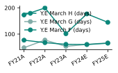

- Particulars L recorded the highest Multiple, at 7.2. Management attributes the result to steady execution across the portfolio. On average, Multiple stood at 4.3. The mix of activities remained broadly consistent with earlier reporting periods.
Among all items, - Particulars L stood out with Value (Rs. cr.) of ₹24,814. Working capital and cost discipline stayed in focus throughout the year. This represented 20.6% of the overall figure. The figures below set out the main components behind these movements.
Across the table, Value (Rs. cr.) amounted to ₹120,338. Comparisons are made on the same basis as in the prior presentation. Among all items, - Particulars L stood out with Value Per Share (Rs.) of ₹85. Operating conditions were mixed, with some segments advancing faster than others.
Value Per Share (Rs.) averaged ₹33 across the items shown. Capital allocation continued to favour projects with clear returns. The largest Target was reported for Rating A, amounting to 337. The board reviewed these results against the plan set at the start of the period.
That item accounted for 15.9% of the total. Seasonal effects are reflected in the timing of several line items. In total, Target came to 2,123. Further detail on each component is provided in the accompanying table.
Risk management practices were applied consistently across reporting units. The outlook takes into account current demand and the pipeline of commitments. Pricing and volume both contributed to the movements described here. Overheads were monitored closely against the approved budget.
These results are presented after the usual internal review and reconciliation. Investment in capacity is expected to support the next phase of growth. The relationship between revenue and costs is discussed alongside the table. Exposure to external factors was managed within the agreed limits.
The performance of individual items is summarised in the chart that follows. Liquidity remained adequate to meet the commitments of the period. Each figure is shown on the same basis as the related table. The narrative below highlights the items that moved most during the period.
Efficiency measures introduced earlier began to show in the results. Management continues to track these indicators on a regular basis.
| BSE CODE: 500400 | NSE CODE: TATAPOWER |
|---|---|
| Item A | SENSEX: 67,155 |
| Particulars | Methodology | Multiple | % Holding | Value (Rs. cr.) | Value Per Share (Rs.) |
|---|---|---|---|---|---|
| Particulars A | |||||
| - Particulars B | Methodology A | 2.0 | 112.2% | 15,077 | 70 |
| - Particulars C | Methodology A | 6.6 | 158.4% | 11,366 | 46 |
| - Particulars D | Consolidated (cr) H | 3.1 | % Holding A | 1,477 | (10) |
| - Particulars E | Methodology A | 5.6 | 115.7% | 9,127 | 29 |
| - Particulars F | Methodology A | 4.8 | 151.6% | 3,539 | 9 |
| - Particulars G | Methodology A | 3.9 | 155.9% | 15,350 | 73 |
| - Particulars H | Methodology A | 1.8 | % Holding A | 11,946 | 67 |
| Particulars I | |||||
| - Particulars J | Consolidated (cr) H | 7.1 | 5,665 | 11 | |
| - Particulars K | Consolidated (cr) F | 3.2 | -7,194 | (48) | |
| - Particulars L | Methodology A | 7.2 | 24,814 | 85 | |
| - Particulars M | Consolidated (cr) H | 3.3 | 11,468 | 64 | |
| - Particulars N | Consolidated (cr) H | 3.4 | 1,697 | 4 | |
| - Cash | 16,006 | 76 | |||
| 116.1% | 14 | ||||
| Particulars O | 7 |
| Dates | Rating | Target |
|---|---|---|
| 17-May-21 | Rating B | 248 |
| 28-May-21 | Rating B | 319 |
| 29-Aug-21 | Rating B | 318 |
| 19-Jul-22 | Rating A | 337 |
| 22-Sep-22 | Rating A | 259 |
| 15-Jun-23 | Rating B | 198 |
| 4-Sep-23 | Rating A | 185 |
| 5-Sep-23 | Rating B | 259 |


Over the period from FY21A to FY25E, Revenue rose by 62.8% to reach 10,158. Operating conditions were mixed, with some segments advancing faster than others. Y.E March (Rs. cr) E (cr) ended FY25E at 1,980, having risen by 209.9% since FY21A. Capital allocation continued to favour projects with clear returns.
Item G fell by 2.9% between FY21A and FY25E, closing at 33. The board reviewed these results against the plan set at the start of the period. Seasonal effects are reflected in the timing of several line items. Further detail on each component is provided in the accompanying table.
Risk management practices were applied consistently across reporting units. The outlook takes into account current demand and the pipeline of commitments. Pricing and volume both contributed to the movements described here. Overheads were monitored closely against the approved budget.
These results are presented after the usual internal review and reconciliation. Investment in capacity is expected to support the next phase of growth. The relationship between revenue and costs is discussed alongside the table. Exposure to external factors was managed within the agreed limits.
The performance of individual items is summarised in the chart that follows. Liquidity remained adequate to meet the commitments of the period. Each figure is shown on the same basis as the related table. The narrative below highlights the items that moved most during the period.
Efficiency measures introduced earlier began to show in the results. Management continues to track these indicators on a regular basis. Management attributes the result to steady execution across the portfolio. The mix of activities remained broadly consistent with earlier reporting periods.
Working capital and cost discipline stayed in focus throughout the year.
| Company Data | Unnamed: 1 | Unnamed: 2 | Unnamed: 3 |
|---|---|---|---|
| Company Data A (cr) | Rs. 61,212 | ||
| Company Data B (cr) | Rs. 89,911 | ||
| Company Data C (cr) | 227.8 | ||
| Company Data D | 36.2% | ||
| Company Data E | 0.5% | ||
| Company Data F | Rs. 196 | ||
| Company Data G | Rs. 124 | ||
| Company Data H | 556,118 | ||
| Company Data I | 0.7 | ||
| Company Data J | Rs. 0 | ||
| Company Data K % | Q3FY23 | Q4FY23 | Q1FY24 |
| Company Data L | 68.3 | 76.4 | 32.0 |
| Company Data M | 13.6 | 15.4 | 6.7 |
| Company Data N | 21.6 | 23.6 | 10.5 |
| Company Data O | 39.5 | 46.5 | 19.9 |
| Others | 1.1 | 1.1 | 0.5 |
| Total | 100.0 | 100.0 | 100.0 |
| Company Data P | 2.0 | 2.2 | 1.0 |
| Company Data Q | Item B | Item C | Item D |
| Company Data R | 32.1% | 44.2% | 6.6% |
| Company Data S | 8.4% | 16.7% | 7.9% |
| Company Data T | 22.1% | 26.7% | -1.2% |
| Y.E March (Rs. cr) | FY21A | FY22A | FY23A | FY24E | FY25E |
|---|---|---|---|---|---|
| Y.E March (Rs. cr) A | 41,426 | 56,551 | 69,533 | 76,772 | 84,796 |
| Consolidated (cr) D | 16 | 41 | 38 | 10 | 11 |
| Y.E March (Rs. cr) A | 9,751 | 11,117 | 12,012 | 12,921 | 15,082 |
| Item F | (18) | 16 | 10 | 15 | 17 |
| EBIT | 3,474 | 4,133 | 4,352 | 4,596 | 4,900 |
| Revenue | 6,239 | 6,698 | 7,261 | 8,466 | 10,158 |
| Item F | 5,055 | 4,917 | 5,835 | 5,441 | 5,359 |
| Y.E March (Rs. cr) D | 1,660 | 1,969 | 5,337 | 3,552 | 3,022 |
| Y.E March (Rs. cr) A | 2,523 | 3,897 | 7,200 | 6,684 | 7,681 |
| Consolidated (cr) D | (21) | 67 | 107 | (8) | 22 |
| Y.E March (Rs. cr) E (cr) | 639 | 497 | 2,146 | 1,662 | 1,980 |
| Item G | 34 | 17 | 38 | 32 | 33 |
| Y.E March (Rs. cr) A | 1,884 | 2,739 | 5,075 | 4,986 | 5,940 |
| Y.E March (Rs. cr) B (%) | 1,421 | 2,291 | 4,276 | 4,292 | 4,810 |
| Y.E March (Rs. cr) A | 137 | 191 | - | - | - |
| EBIT | 1,562 | 2,421 | 4,348 | 4,219 | 4,815 |
| Y.E March (Rs. cr) F (Rs.) | 74 | 70 | 100 | 0 | 14 |
| Y.E March (Rs. cr) F (Rs.) | 422 | 427 | 418 | 414 | 410 |
| Y.E March (Rs. cr) D | 5 | 8 | 14 | 13 | 15 |
| Item F | 27 | 62 | 83 | 0 | 22 |
| Y.E March (Rs. cr) C | 3 | 3 | 3 | 3 | 3 |
| Ratings | Large caps | Midcaps | Small Caps |
|---|---|---|---|
| Rating A | Large caps A % | Midcaps A % | Small Caps A % |
| Ratings A | - | Midcaps B % | Small Caps B % |
| Rating B | Large caps B % | Large caps B % | Large caps B % |
| Ratings B | Large caps C % | Large caps C % | Large caps C % |
| Ratings C | - |

Consolidated (cr) A ended FY25E at 14.8, having fallen by 85.5% since FY23A. Risk management practices were applied consistently across reporting units. Consolidated (cr) H rose by 9.8% between FY23A and FY25E, closing at 15.7. The outlook takes into account current demand and the pipeline of commitments.
Over the period from FY23A to FY25E, Consolidated (cr) J fell by 6.5% to reach 17.4. Pricing and volume both contributed to the movements described here. Y.E March (Rs. cr) G ended FY25E at 5,357, having risen by 92.6% since FY21A. Overheads were monitored closely against the approved budget.
Y.E March (Rs. cr) H fell by 35.8% between FY21A and FY25E, closing at 1,708. These results are presented after the usual internal review and reconciliation. Over the period from FY21A to FY25E, Y.E March (Rs. cr) J fell by 18.2% to reach 4,654. Investment in capacity is expected to support the next phase of growth.
Y.E March (Rs. cr) K ended FY25E at -5,308, having risen by 327.4% since FY21A. The relationship between revenue and costs is discussed alongside the table. Y.E March (Rs. cr) M rose by 152.2% between FY21A and FY25E, closing at 3,046. Exposure to external factors was managed within the agreed limits.
Over the period from FY21A to FY25E, Y.E March (Rs. cr) O rose by 66.7% to reach 3,754. The performance of individual items is summarised in the chart that follows. Y.E March (Rs. cr) P ended FY25E at -1,572, having fallen by 62.2% since FY21A. Liquidity remained adequate to meet the commitments of the period.
Y.E March (Rs. cr) Q rose by 37.8% between FY21A and FY25E, closing at -514. Each figure is shown on the same basis as the related table. Over the period from FY21A to FY25E, Y.E March (Rs. cr) R rose by 4.3% to reach -3,170. The narrative below highlights the items that moved most during the period.
Y.E March (Rs. cr) S ended FY25E at -5,322, having risen by 3.1% since FY21A. Efficiency measures introduced earlier began to show in the results. Y.E March (Rs. cr) U fell by 4.9% between FY21A and FY25E, closing at 3,849. Management continues to track these indicators on a regular basis.
| Consolidated (cr) | FY23A | FY24E | FY25E |
|---|---|---|---|
| Consolidated (cr) G | 75,665.5 | 83,899.7 | 88,260.5 |
| Consolidated (cr) B (%) | 39.8 | 11.2 | 11.6 |
| Consolidated (cr) E | 12,906.9 | 13,976.0 | 15,757.6 |
| Consolidated (cr) G | 22.5 | 23.9 | 24.7 |
| Consolidated (cr) E | 4,700.3 | 4,462.9 | 5,205.6 |
| Consolidated (cr) A | 102.0 | 0.4 | 14.8 |
| Consolidated (cr) H | 14.3 | 14.7 | 15.7 |
| Consolidated (cr) G | 90.3 | 0.4 | 22.7 |
| Consolidated (cr) G | 24.1 | 35.1 | 32.6 |
| Consolidated (cr) B (%) | 2.8 | 3.9 | 3.5 |
| Consolidated (cr) B (%) | 15.7 | 17.8 | 15.6 |
| Consolidated (cr) J | 18.6 | 17.1 | 17.4 |
| Consolidated (cr) C (%) | 2.1 | 1.8 | 1.5 |
| Y.E March (Rs. cr) | FY21A | FY22A | FY23A | FY24E | FY25E |
|---|---|---|---|---|---|
| Y.E March (Rs. cr) G | 2,781 | 3,395 | 4,884 | 4,904 | 5,357 |
| Y.E March (Rs. cr) H | 2,660 | 1,163 | 2,830 | 1,541 | 1,708 |
| Y.E March (Rs. cr) I | 346 | 18 | (2,647) | 3,359 | (2,319) |
| Y.E March (Rs. cr) J | 5,692 | 4,638 | 5,020 | 9,779 | 4,654 |
| Y.E March (Rs. cr) K | (1,242) | (4,916) | (5,363) | (8,486) | (5,308) |
| Y.E March (Rs. cr) L | 461 | (768) | (2,398) | (39) | (42) |
| Y.E March (Rs. cr) M | 1,208 | 1,483 | 2,603 | 2,740 | 3,046 |
| Y.E March (Rs. cr) N | 473 | (4,238) | (5,132) | (5,897) | (2,469) |
| Y.E March (Rs. cr) O | 2,252 | 518 | 3,754 | - | - |
| Y.E March (Rs. cr) P | (4,160) | 2,850 | 828 | (1,657) | (1,572) |
| Y.E March (Rs. cr) Q | (373) | (388) | (546) | (455) | (514) |
| Y.E March (Rs. cr) R | (3,040) | (3,865) | (3,176) | (3,122) | (3,170) |
| Y.E March (Rs. cr) S | (5,164) | (821) | 951 | (5,164) | (5,322) |
| Y.E March (Rs. cr) T | 976 | (519) | 781 | (1,199) | (2,837) |
| Y.E March (Rs. cr) U | 4,049 | 4,539 | 7,971 | 6,713 | 3,849 |


Revenue rose by 6.1% between Q1FY23 and Q1FY24, closing at 21,947. Over the period from Q1FY23 to Q1FY24, EBITDA rose by 72.7% to reach 4,691. Item E ended Q1FY24 at 31, having risen by 72.2% since Q1FY23. Item F rose by 13.4% between Q1FY23 and Q1FY24, closing at 1,330.
Over the period from Q1FY23 to Q1FY24, EBIT rose by 119.2% to reach 3,294. Item G ended Q1FY24 at 1,747, having risen by 19.2% since Q1FY23. Other Income fell by 91.1% between Q1FY23 and Q1FY24, closing at 36. Over the period from Q1FY23 to Q1FY24, Item I fell by 55.2% to reach 514.
Item J ended Q1FY24 at 2,142, having risen by 41.6% since Q1FY23. Tax rose by 87.0% between Q1FY23 and Q1FY24, closing at 475. Over the period from Q1FY23 to Q1FY24, Item K rose by 31.6% to reach 1,652. Item L ended Q1FY24 at 245, having risen by 92.9% since Q1FY23.
Item M rose by 22.6% between Q1FY23 and Q1FY24, closing at 1,384. Over the period from Q1FY23 to Q1FY24, Consolidated (cr) D fell by 10.3% to reach 1,046. Item O ended Q1FY24 at 478, having risen by 1.5% since Q1FY23. Item P (Rs.) fell by 25.0% between Q1FY23 and Q1FY24, closing at 3.
Over the period from FY21A to FY25E, Cash fell by 7.9% to reach 8,709. Y.E March (Rs. cr) V ended FY25E at 13,761, having risen by 71.9% since FY21A. Y.E March (Rs. cr) W rose by 195.0% between FY21A and FY25E, closing at 8,888. Over the period from FY21A to FY25E, Y.E March (Rs. cr) X rose by 38.3% to reach 27,465.
Y.E March (Rs. cr) Y ended FY25E at 20,519, having risen by 2.6% since FY21A. Y.E March (Rs. cr) Z rose by 47.3% between FY21A and FY25E, closing at 164,830. Over the period from FY21A to FY25E, Y.E March (Rs. cr) AA rose by 41.5% to reach 112,413. Y.E March (Rs. cr) AB ended FY25E at 7,563, having risen by 42.6% since FY21A.
Y.E March (Rs. cr) AC rose by 3.3% between FY21A and FY25E, closing at 5,046. Over the period from FY21A to FY25E, Y.E March (Rs. cr) AD rose by 26.5% to reach 372. Y.E March (Rs. cr) AE ended FY25E at 9,063, having risen by 14.6% since FY21A. Y.E March (Rs. cr) AF rose by 40.0% between FY21A and FY25E, closing at 215,969.
Over the period from FY21A to FY25E, Y.E March (Rs. cr) AG rose by 88.2% to reach 52,964. Y.E March (Rs. cr) AH ended FY25E at 2,367, having risen by 131.6% since FY21A. Y.E March (Rs. cr) AI rose by 0.7% between FY21A and FY25E, closing at 71,846. Over the period from FY21A to FY25E, Y.E March (Rs. cr) AJ rose by 50.2% to reach 23,918.
Y.E March (Rs. cr) AL ended FY25E at 54,306, having risen by 57.0% since FY21A. Y.E March (Rs. cr) AM rose by 52.8% between FY21A and FY25E, closing at 55,271. Over the period from FY21A to FY25E, Item L rose by 134.1% to reach 10,737. Y.E March (Rs. cr) AN ended FY25E at 218,888, having risen by 38.1% since FY21A.
Y.E March (Rs. cr) AO (Rs.) rose by 54.6% between FY21A and FY25E, closing at 167.
| Unnamed: 0 | Q1FY24 | Q1FY23 | YoY Growth % | Q4FY23 | QoQ Growth % |
|---|---|---|---|---|---|
| Revenue | 21,947 | 20,694 | 7.4 | 18,540 | 32.3 |
| EBITDA | 4,691 | 2,717 | 111.1 | 4,181 | 21.6 |
| Item E | 31 | 18 | 1,249.7 | 34 | (200.9) |
| Item F | 1,330 | 1,173 | 12.5 | 1,375 | (5.1) |
| EBIT | 3,294 | 1,503 | 193.9 | 2,778 | 34.7 |
| Item G | 1,747 | 1,466 | 27.2 | 1,759 | 3.2 |
| Other Income | 36 | 403 | (134.6) | 448 | (132.9) |
| Item H | 338 | - | n.m. | - | n.m. |
| Item I | 514 | 1,147 | (83.9) | 255 | 141.3 |
| Item J | 2,142 | 1,513 | 55.5 | 1,693 | 39.5 |
| Tax | 475 | 254 | 128.4 | 320 | 78.8 |
| Item K | 1,652 | 1,255 | 41.3 | 1,399 | 32.9 |
| Item L | 245 | 127 | 132.2 | 234 | 6.7 |
| Item M | 1,384 | 1,129 | 31.9 | 1,127 | 36.1 |
| Item N | (350) | - | n.m. | - | n.m. |
| Consolidated (cr) D | 1,046 | 1,166 | (10.8) | 1,144 | (7.6) |
| Item O | 478 | 471 | n.m. | 460 | n.m. |
| Item P (Rs.) | 3 | 4 | (10.3) | 3 | (7.7) |
| Y.E March (Rs. cr) | FY21A | FY22A | FY23A | FY24E | FY25E |
|---|---|---|---|---|---|
| Cash | 9,454 | 10,499 | 17,553 | 15,300 | 8,709 |
| Y.E March (Rs. cr) V | 8,004 | 9,593 | 11,214 | 11,389 | 13,761 |
| Y.E March (Rs. cr) W | 3,013 | 6,838 | 6,277 | 7,517 | 8,888 |
| Y.E March (Rs. cr) X | 19,865 | 23,435 | 27,020 | 27,197 | 27,465 |
| Y.E March (Rs. cr) Y | 19,995 | 21,063 | 24,971 | 23,574 | 20,519 |
| Y.E March (Rs. cr) Z | 111,930 | 122,477 | 134,168 | 154,598 | 164,830 |
| Y.E March (Rs. cr) AA | 79,445 | 83,033 | 94,139 | 104,417 | 112,413 |
| Y.E March (Rs. cr) AB | 5,302 | 7,132 | 8,368 | 7,983 | 7,563 |
| Y.E March (Rs. cr) AC | 4,885 | 5,133 | 5,133 | 4,995 | 5,046 |
| Y.E March (Rs. cr) AD | 294 | 535 | 396 | 306 | 372 |
| Y.E March (Rs. cr) AE | 7,910 | 8,541 | 9,214 | 8,992 | 9,063 |
| Y.E March (Rs. cr) AF | 154,299 | 181,764 | 206,920 | 212,867 | 215,969 |
| Y.E March (Rs. cr) AG | 28,137 | 39,170 | 41,840 | 53,078 | 52,964 |
| Y.E March (Rs. cr) AH | 1,022 | 1,954 | 2,182 | 2,260 | 2,367 |
| Y.E March (Rs. cr) AI | 71,349 | 74,728 | 78,635 | 75,295 | 71,846 |
| Y.E March (Rs. cr) AJ | 15,920 | 19,200 | 24,387 | 24,674 | 23,918 |
| Y.E March (Rs. cr) AK | 519 | 508 | 513 | 512 | 519 |
| Y.E March (Rs. cr) AL | 34,596 | 35,605 | 46,197 | 49,191 | 54,306 |
| Y.E March (Rs. cr) AM | 36,180 | 34,309 | 44,803 | 48,933 | 55,271 |
| Item L | 4,587 | 5,657 | 8,488 | 9,510 | 10,737 |
| Y.E March (Rs. cr) AN | 158,477 | 179,756 | 197,823 | 210,072 | 218,888 |
| Y.E March (Rs. cr) AO (Rs.) | 108 | 107 | 142 | 153 | 167 |


Over the period from FY21A to FY25E, Y.E March F (days) fell by 15.0% to reach 65.2. Each figure is shown on the same basis as the related table. Y.E March G (days) ended FY25E at 66.5, having risen by 38.5% since FY21A. The narrative below highlights the items that moved most during the period.
Y.E March H (days) fell by 16.2% between FY21A and FY25E, closing at 144.7. Efficiency measures introduced earlier began to show in the results. Over the period from FY21A to FY25E, Y.E March I (x) fell by 18.2% to reach 0.9. Management continues to track these indicators on a regular basis.
Y.E March J (x) ended FY25E at 0.4, having fallen by 20.0% since FY21A. Management attributes the result to steady execution across the portfolio. Y.E March L (x) rose by 14.3% between FY21A and FY25E, closing at 0.8. The mix of activities remained broadly consistent with earlier reporting periods.
Over the period from FY21A to FY25E, Y.E March M (x) rose by 75.0% to reach 0.7. Working capital and cost discipline stayed in focus throughout the year. Y.E March N (x) ended FY25E at 2.6, having risen by 62.5% since FY21A. The figures below set out the main components behind these movements.
Y.E March O (x) fell by 37.5% between FY21A and FY25E, closing at 1.5. Comparisons are made on the same basis as in the prior presentation. Over the period from FY21A to FY25E, Y.E March Q (x) fell by 3.3% to reach 2.9. Operating conditions were mixed, with some segments advancing faster than others.
Y.E March R (x) ended FY25E at 15.4, having risen by 15.8% since FY21A. Capital allocation continued to favour projects with clear returns. Y.E March S (x) fell by 13.6% between FY21A and FY25E, closing at 31.2. The board reviewed these results against the plan set at the start of the period.
Over the period from FY21A to FY25E, Y.E March T (x) rose by 70.0% to reach 3.4. Seasonal effects are reflected in the timing of several line items. Further detail on each component is provided in the accompanying table. Risk management practices were applied consistently across reporting units.
The outlook takes into account current demand and the pipeline of commitments. Pricing and volume both contributed to the movements described here. Overheads were monitored closely against the approved budget. These results are presented after the usual internal review and reconciliation.
Investment in capacity is expected to support the next phase of growth. The relationship between revenue and costs is discussed alongside the table. Exposure to external factors was managed within the agreed limits. The performance of individual items is summarised in the chart that follows.
Liquidity remained adequate to meet the commitments of the period.
| Unnamed: 0 | Old estimates | Unnamed: 2 | New estimates | Unnamed: 4 | Change % | Unnamed: 6 |
|---|---|---|---|---|---|---|
| Item Q | FY24E | FY25E | FY24E | FY25E | FY24E | FY25E |
| Revenue | 68,349 | 95,274 | 51,066 | 89,661 | 3.0 | 1.3 |
| EBITDA | 11,555 | 16,832 | 8,486 | 15,674 | 5.6 | 2.1 |
| Item R (%) | 20.0 | 26.4 | 14.7 | 25.0 | 48bps | 9bps |
| Consolidated (cr) D | 4,256 | 6,195 | 2,798 | 5,175 | (9.8) | (6.8) |
| Consolidated (cr) E | 13.1 | 19.0 | 9.0 | 15.7 | (10.4) | (6.5) |
| Y.E March | FY21A | FY22A | FY23A | FY24E | FY25E |
|---|---|---|---|---|---|
| Y.E March A | |||||
| Consolidated (cr) C (%) | 30.3 | 27.1 | 22.6 | 23.4 | 24.4 |
| Y.E March B (%) | 19.8 | 16.6 | 14.3 | 15.2 | 16.2 |
| Y.E March C (%) | 4.8 | 5.5 | 8.2 | 7.8 | 7.7 |
| Consolidated (cr) I (%) | 8.7 | 13.0 | 17.8 | 16.1 | 17.5 |
| Y.E March D (%) | 9.1 | 9.6 | 9.4 | 10.7 | 11.9 |
| Y.E March E | |||||
| Y.E March F (days) | 76.7 | 67.3 | 60.9 | 60.0 | 65.2 |
| Y.E March G (days) | 48.0 | 77.1 | 53.1 | 60.8 | 66.5 |
| Y.E March H (days) | 172.7 | 199.4 | 101.3 | 176.8 | 144.7 |
| Y.E March I (x) | 1.1 | 1.1 | 1.2 | 1.0 | 0.9 |
| Y.E March J (x) | 0.5 | 0.4 | 0.5 | 0.4 | 0.4 |
| Y.E March K | |||||
| Y.E March L (x) | 0.7 | 0.8 | 0.9 | 0.8 | 0.8 |
| Y.E March M (x) | 0.4 | 0.5 | 0.7 | 0.7 | 0.7 |
| Y.E March N (x) | 1.6 | 1.9 | 1.7 | 2.2 | 2.6 |
| Y.E March O (x) | 2.4 | 2.6 | 2.0 | 1.8 | 1.5 |
| Y.E March P | |||||
| Y.E March Q (x) | 3.0 | 3.9 | 2.5 | 3.0 | 2.9 |
| Y.E March R (x) | 13.3 | 19.5 | 15.3 | 17.9 | 15.4 |
| Y.E March S (x) | 36.1 | 54.3 | 24.7 | 35.0 | 31.2 |
| Y.E March T (x) | 2.0 | 4.6 | 2.8 | 3.9 | 3.4 |
